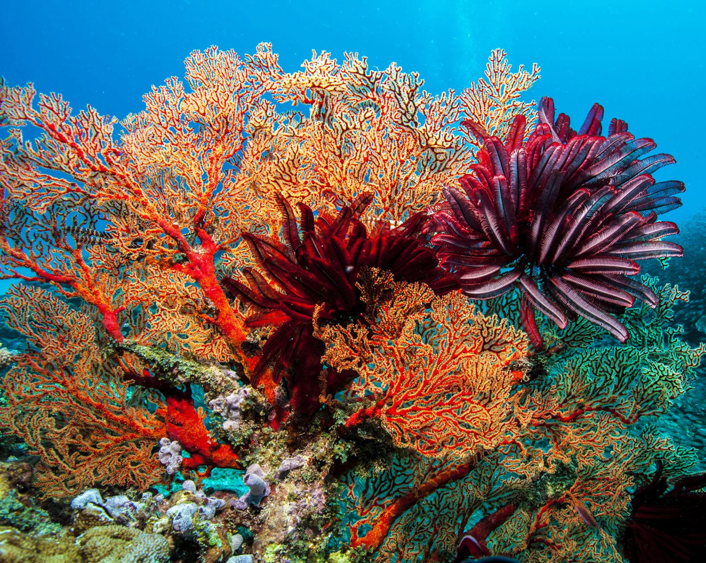
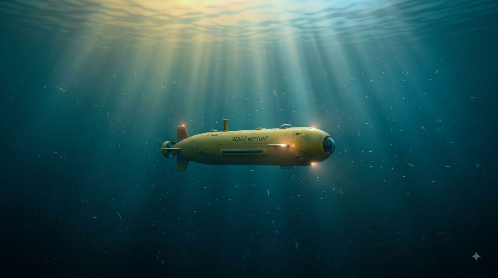

Leave No Trace
Intelligence that passes through without leaving a mark.
Local-first isn't just a privacy decision. It's an environmental one. Every query that stays on your device is water that didn't evaporate, electricity that didn't travel, carbon that stayed in the ground.
A better path already exists
Every conversation with a cloud AI costs about two cups of water.
Research from UC Riverside and the University of Virginia found that a typical ChatGPT session uses roughly 2 cups of water — for cooling towers and electricity generation at data centers. Multiply that by billions of queries a day and you start to see the scale. There is a better way — and we've already built it.

Water consumed by a typical 10–50 response cloud AI session, including on-site cooling and electricity generation at data centers.
The per-response water cost when you account for the full data center footprint behind every cloud AI query — it adds up fast.
When Jean runs on your device, the query never leaves. No data center. No cooling tower. No water cost. The compute runs where you are.
What it cost Jean to correctly answer 7 consecutive NEJM clinical diagnostic cases — running entirely on local hardware, start to finish.
Source: UC Riverside / University of Virginia research on AI water consumption. Conversions: 500mL ≈ 2.1 cups; 10–50mL ≈ 2–10 teaspoons.
The no-data-center path isn't theoretical. It's already proven.
7-DOF robotic arm controlled through complete task loops — zero LLM calls in the cognitive path. Results posted publicly.
Autonomous navigation — 5,490 live Oakland route nodes evaluated with no cloud inference. Zero data center involvement. Posted publicly.
Clinical diagnostics at 27 seconds and 2 cents per case — running on local hardware, no data leaving the room, no cloud cost.
Imagine a world without the data center. We're not there yet — but every system we build moves one step closer to it.
Democratizing AI
A world where humans and AI work together — on the problems that actually matter.
The current AI economy moves intelligence upward — into large clouds, behind enterprise contracts, accessible only to those with the infrastructure to reach it. That is not the only path forward.
Jean OS is built on a different premise: that intelligence belongs at the edge, in the hands of the people doing the work. A teacher in a rural classroom. A clinician in an under-resourced clinic. A conservationist in the field without reliable internet.
AI that runs locally doesn't just protect privacy — it democratizes capability. The same quality of intelligence that powers a Fortune 500 enterprise can run on a five-year-old laptop in a school that can barely afford textbooks.
That is the world we are building toward. Not AI over humans. Not humans resisting AI. Both, in harmony, working on things that actually matter.
Leave no trace
Intelligence that passes through without leaving a mark on the planet — no water cost, no unnecessary compute, no data residue.
Privacy by architecture
Your data stays on your device. Not a policy that can change — a property that can't. Built into the foundation.
Radical efficiency
Formulas built in-house reduce compute to the minimum necessary. Nothing wasted. Everything intentional.
Intelligence for everyone
The best AI shouldn't require a data center contract. We build for rural schools, offline clinics, and everyone between.
Who we serve
The people doing the hardest work with the fewest resources.
The best technology in the world shouldn't require an enterprise contract to access. We're building toward a future where the communities that need AI most are the first ones who can actually use it.
Libraries
The last free institution of knowledge access
Jean can run on existing library hardware — no cloud subscription, no per-seat licensing. The same capability, without the gatekeeping.
Teachers
Hours returned every week
Educators like Kamyia — the ones who give everything to their students. Jean gives them back their time without letting student data leave the room.
Faith Communities
Often the largest safety net in any neighborhood
Churches, mosques, temples, and congregations doing direct community service — with the mission of a large nonprofit and the budget of a small one.
Museums
Preserving collective memory
Cultural institutions on shoestring budgets, holding the artifacts and stories that define who we are. AI that doesn't require cloud infrastructure changes what's possible for them.
NGOs
Maximum mission, minimum margin
Non-governmental organizations working on the ground in underserved communities — often doing the most critical work with the least infrastructure support.
Small Business
The backbone of every community
Local businesses that can't afford enterprise AI contracts but deserve the same capabilities. Intelligence that scales down to meet them.
An invitation
A call to environmental stewards.
If you work in conservation, ecological restoration, sustainable energy, or climate resilience — we want to hear from you. The same architecture that eliminates data center waste from AI can be pointed at the world's most complex environmental problems.
We're actively exploring partnerships with organizations doing work at the intersection of technology and the natural world. If that's you, introduce yourself.
The commitment
Now · Active
Giving back time
Every hour Jean saves a teacher, clinician, or community organizer is real value returned — starting from day one, before the first dollar of profit.
Near horizon
The 10% fund
Libraries, NGOs, faith communities, museums, teachers, and underserved communities — access to Jean OS for the organizations doing the hardest work.
Future vision
Founders who were skipped
A dedicated pathway — fellowship, fund, or both — for underrepresented founders building technology that serves communities left out of the innovation economy.
Future vision
Housing + community
Technology alone doesn't close gaps. We envision expanding the mission into housing initiatives and community infrastructure for the places that need it most.
The obligation itself — 10% of all earnings, and the annual benefit reports — is on the record.
B Corp & the M-class shareThe other half
Intelligence that leaves things better than it found them.
We didn't build Jean to extract value from the world. We built it to return value — to teachers, healers, stewards, and builders who were never handed a seat at the table.
If that's the world you want to build too, there's a place for you here.